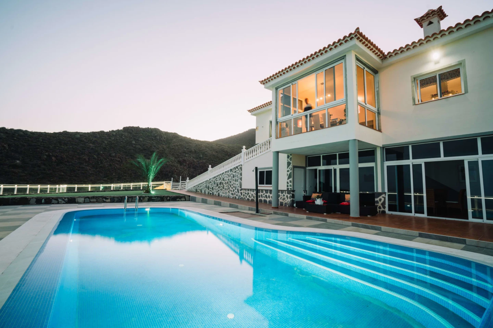
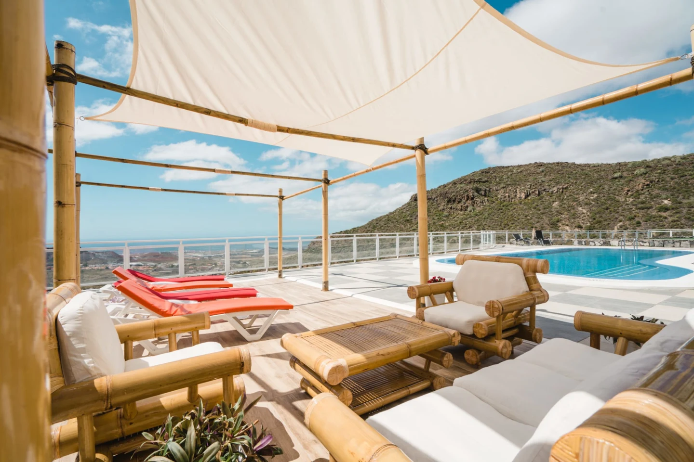
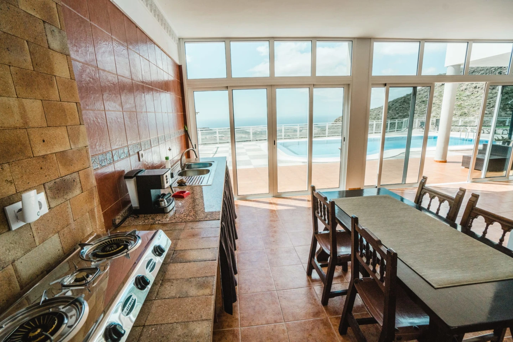
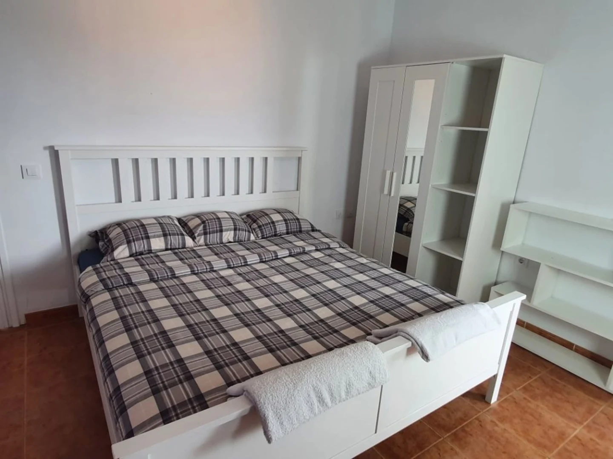

La migliore combinazione possibile: la cultura del surf nell'involucro di un alloggio di lusso. Questa Surf House e' pensata per chi non vuole scegliere tra la vita in acqua e il comfort a terra. Interni firmati da designer, materiali di pregio e una curazione estetica che trasforma ogni stanza in uno spazio da vivere intensamente.
A Playa de Las Americas, epicentro del surf nel sud di Tenerife, con accesso rapido ai migliori break dell'isola. La piscina privata, il garage per le tavole e gli spazi comuni ampi la rendono la base perfetta per gruppi di surfer che vogliono il meglio.







La proposta Surf House Luxury si compone di tre ville selezionate — ciascuna con la propria identità ma accomunate dalla qualità premium e dalla posizione strategica per il surf di Tenerife.
Finca di lusso a San Miguel con vista mare e spazi ampi. Perfetta per gruppi che cercano autenticità con comfort premium.
Villa di lusso a Playa Paraíso con piscina privata, zona relax e servizi extra premium. Design curato e vista mare.
Villa esclusiva a El Duque, Costa Adeje. Fino a 16-20 ospiti, ampi spazi interni ed esterni, piscina privata.
San Miguel de Abona, Tenerife Sur — Aldea Blanca, Calle Camino la Hoya 74 · Registro turistico VV·38·4·0098969 · Rating Booking 9.7
Villa privata di lusso immersa nel contesto naturale e autentico di San Miguel de Abona. Pensata per gruppi che cercano spazio, tranquillità e posizione strategica nel sud di Tenerife, con vista oceano e un equilibrio raro tra natura, comfort e accessibilità.
Playa Paraíso, Costa Adeje, Tenerife Sur — Lusso esclusivo B2B
Villa di lusso in posizione privilegiata a Playa Paraíso. Ideale per gruppi numerosi, tour operator, ritiri aziendali ed eventi privati. Due piani indipendenti, ampi spazi interni ed esterni, finiture di pregio e un contesto residenziale esclusivo.
Per gruppi di amici o famiglie che vogliono combinare sessioni di surf intense con serate di relax e comfort assoluto. La surf house definitiva di Tenerife.
Contattaci per disponibilita' e prezzi
💬 Contattaci su WhatsApp